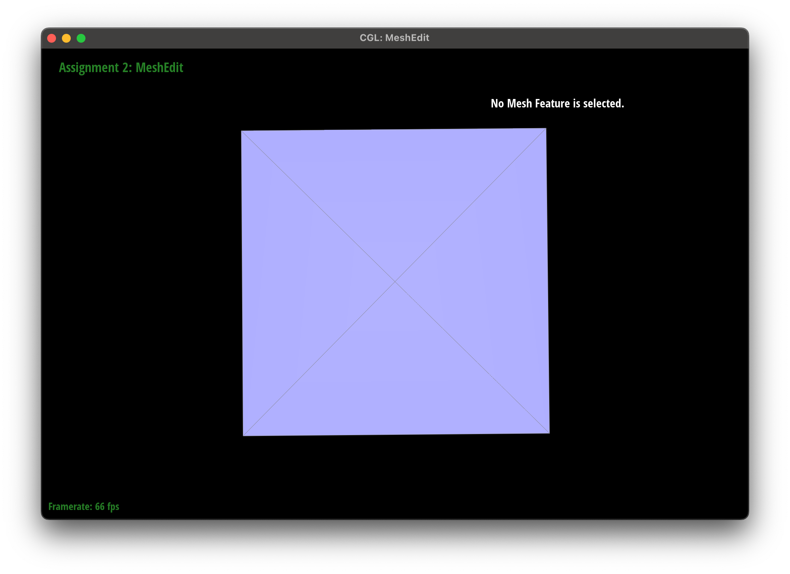

Overview
In this project, we implement a variety of mesh editing operations, including Bezier curve and surface evaluation, area-weighted vertex normals, edge flip, edge split, and loop subdivision. All of these were built on top of a half-edge data structure. We also implemented a few extra credit extensions, including support for boundary edges. To me, the most interesting parts of the assignment were understanding the design choices that go into saving and manipulating meshes. I also enjoyed the challenge of implementing the loop subdivision algorithm and seeing how it affects the mesh!
Section I: Bezier Curves and Surfaces
Part 1: Bezier Curves with 1D de Casteljau Subdivision
Briefly explain de Casteljau's algorithm and how you implemented it in order to evaluate Bezier curves.De Casteljau's algorithm is a recursive algorithm that evaluates a Bezier curve at a given parameter \(t\). It works by taking a set of control points and recursively evaluating the midpoints between them. The algorithm continues to evaluate midpoints until only one point is left, which is the evaluated point on the Bezier curve. In order to implement this algorithm, I created a recursive function that takes in the control points and the parameter \(t\). The function then evaluates the midpoints between the control points and calls itself with the new set of midpoints. The base case is when there is only one point left, in which case the function returns that point. The code for this algorithm is shown below:
std::vectorBezierCurve::evaluateStep(std::vector const &points) { if (points.size() == 1) { return points; } else { std::vector newPoints; for (size_t i = 0; i < points.size() - 1; i++) { newPoints.push_back((1 - t) * points[i] + t * points[i + 1]); } return newPoints; } }
Take a look at the provided .bzc files and create your own Bezier curve with 6 control points of your choosing. Use this Bezier curve for your screenshots below.
The Bezier curve can be seen below:
Show screenshots of each step / level of the evaluation from the original control points down to the final evaluated point. Press E to step through. Toggle C to show the completed Bezier curve as well.
|
|
|
|
|
|
|
|
Show a screenshot of a slightly different Bezier curve by moving the original control points around and modifying the parameter \(t\) via mouse scrolling.
The image can be found below:
Part 2: Bezier Surfaces with Separable 1D de Casteljau
Briefly explain how de Casteljau algorithm extends to Bezier surfaces and how you implemented it in order to evaluate Bezier surfaces.The de Casteljau algorithm extends to Bezier surfaces by applying the 1D de Casteljau algorithm to the rows and columns of the control points. This is done by first evaluating the rows of the control points to get a set of curves, and then evaluating the columns of the control points to get a set of curves. Finally, the algorithm evaluates the resulting curves to get the final point on the Bezier surface. I implemented this algorithm by creating a recursive function that takes in the control points and the parameters \(u\) and \(v\). The function first evaluates the rows of the control points to get a set of curves, and then evaluates the columns of the control points to get a set of curves. Finally, the function evaluates the resulting curves to get the final point on the Bezier surface. The code for this algorithm is shown below:
Vector3D BezierPatch::evaluate(double u, double v) const {
std::vector points;
for (size_t i = 0; i < controlPoints.size(); i++) {
points.push_back(evaluate1D(controlPoints[i], u));
}
return evaluate1D(points, v);
}
Show a screenshot of bez/teapot.bez (not .dae) evaluated by your implementation.
The image can be found below:
Section II: Triangle Meshes and Half-Edge Data Structure
Part 3: Area-Weighted Vertex Normals
Briefly explain how you implemented the area-weighted vertex normals.I implemented the area-weighted vertex normals by iterating over the halfedges of the vertex and summing the normals of the triangles that share the vertex. The area-weighted vertex normal is then the sum of the normals of the triangles that share the vertex, normalized. The code for this algorithm is shown below:
Vector3D Vertex::normal(void) const {
Vector3D normal = Vector3D(0, 0, 0);
HalfedgeCIter h = halfedge();
do {
Vector3D v0 = h->vertex()->position;
Vector3D v1 = h->next()->vertex()->position;
Vector3D v2 = h->next()->next()->vertex()->position;
normal += cross(v1 - v0, v2 - v0);
h = h->twin()->next();
} while (h != halfedge());
return normal.unit();
}
Show screenshots of dae/teapot.dae (not .bez) comparing teapot shading with and without vertex normals. Use Q to toggle default flat shading and Phong shading.
The images can be found below:
|
|
|
Part 4: Edge Flip
Briefly explain how you implemented the edge flip operation and describe any interesting implementation / debugging tricks you have used.First, I check whether the edge is a boundary edge; if so, I simply return and do nothing. I then create variables in line with the diagram below:

HalfedgeIter bc = e0->halfedge(), cb = bc->twin(); HalfedgeIter ca = bc->next(), ab = ca->next(); HalfedgeIter bd = cb->next(), dc = bd->next(); HalfedgeIter ad = bc, da = cb; VertexIter a = ab->vertex(); VertexIter b = bc->vertex(); VertexIter c = cb->vertex(); VertexIter d = dc->vertex(); FaceIter abc = bc->face(); FaceIter cbd = cb->face(); FaceIter adc = abc; FaceIter abd = cbd; EdgeIter ad_edge = ad->edge(); EdgeIter ab_edge = ab->edge(); EdgeIter bd_edge = bd->edge(); EdgeIter dc_edge = dc->edge(); EdgeIter ca_edge = ca->edge();
I then re-assign the vertices, edges, faces and half edges to match the transformed diagram. This is done via the code below:
a->halfedge() = ad; b->halfedge() = bd; c->halfedge() = ca; d->halfedge() = da; ad_edge->halfedge() = ad; ab_edge->halfedge() = ab; bd_edge->halfedge() = bd; dc_edge->halfedge() = dc; adc->halfedge() = ad; abd->halfedge() = bd; ad->setNeighbors(dc, da, a, ad_edge, adc); dc->setNeighbors(ca, dc->twin(), d, dc_edge, adc); ca->setNeighbors(ad, ca->twin(), c, ca_edge, adc); da->setNeighbors(ab, ad, d, ad_edge, abd); ab->setNeighbors(bd, ab->twin(), a, ab_edge, abd); bd->setNeighbors(da, bd->twin(), b, bd_edge, abd);Show screenshots of the teapot before and after some edge flips.
|
|
|
Write about your eventful debugging journey, if you have experienced one.
I experienced a few issues with the edge flip operation, particularly with the re-assignments. I previously was using variable names such as h0, h1, h2 which ended up being confusing keeping track of what goes where. Eventually, I switched to using the same notation provided in the diagram in the spec, and carefully re-assigned the vertices, edges, faces and half edges to match the transformed diagram. This helped me keep track of what was going where and made the debugging process much easier.
Part 5: Edge Split
Briefly explain how you implemented the edge split operation and describe any interesting implementation / debugging tricks you have used.The split operation was implemented following the diagram below:

VertexIter m = newVertex(); HalfedgeIter am = newHalfedge(), ma = newHalfedge(); HalfedgeIter mb = newHalfedge(), bm = newHalfedge(); HalfedgeIter md = newHalfedge(), dm = newHalfedge(); HalfedgeIter mc = bc, cm = cb; EdgeIter am_edge = newEdge(); am_edge->isNew = true; EdgeIter bm_edge = newEdge(); EdgeIter dm_edge = newEdge(); dm_edge->isNew = true; EdgeIter cm_edge = bc_edge; FaceIter amb = newFace(); FaceIter bmd = newFace(); FaceIter cmd = cbd; FaceIter amc = abc;
I then re-assigned the vertices, edges, faces and half edges to match the transformed diagram. This is done via the code below:
m->position = (a->position + d->position) / 2; m->halfedge() = ma; a->halfedge() = am; b->halfedge() = bm; c->halfedge() = cm; d->halfedge() = dm; am_edge->halfedge() = am; bm_edge->halfedge() = bm; cm_edge->halfedge() = cm; dm_edge->halfedge() = dm; amc->halfedge() = mc; amb->halfedge() = bm; cmd->halfedge() = cm; bmd->halfedge() = mb; am->setNeighbors(mc, ma, a, am_edge, amc); mc->setNeighbors(ca, cm, m, cm_edge, amc); ca->setNeighbors(am, ca->twin(), c, ca_edge, amc); ma->setNeighbors(ab, am, m, am_edge, amb); ab->setNeighbors(bm, ab->twin(), a, ab_edge, amb); bm->setNeighbors(ma, mb, b, bm_edge, amb); md->setNeighbors(dc, dm, m, dm_edge, cmd); dc->setNeighbors(cm, dc->twin(), d, dc_edge, cmd); cm->setNeighbors(md, mc, c, cm_edge, cmd); dm->setNeighbors(mb, md, d, dm_edge, bmd); mb->setNeighbors(bd, bm, m, bm_edge, bmd); bd->setNeighbors(dm, bd->twin(), b, bd_edge, bmd);
Show screenshots of a mesh before and after some edge splits.
|
|
|
|
Show screenshots of a mesh before and after a combination of both edge splits and edge flips.
|
|
|
Write about your eventful debugging journey, if you have experienced one.
I experienced a few issues with the split operation, particularly with the re-assignments. I previously was using variable names such as h0, h1, h2 which ended up being confusing keeping track of what goes where. Eventually, I switched to using the same notation provided in the diagram in the spec, and carefully re-assigned the vertices, edges, faces and half edges to match the transformed diagram. This helped me keep track of what was going where and made the debugging process much easier. In addition, I had a small bug where I forgot to set the position of the new vertex \(m\) to be the average of the positions of the vertices \(a\) and \(d\). This was a simple fix that I was able to catch quickly.
[Extra Credit] If you have implemented support for boundary edges, show screenshots of your implementation properly handling split operations on boundary edges.
I implemented support for boundary edges with a similar algorithm to the normal case. I removed all references to any points \(d\). Then, for the twin half-edge CB, I simply split it into two and made one point to another. The code for this can be seen below:
m->position = (b->position + c->position) / 2; m->halfedge() = ma; a->halfedge() = am; b->halfedge() = bm; c->halfedge() = cm; am_edge->halfedge() = am; bm_edge->halfedge() = bm; cm_edge->halfedge() = cm; amc->halfedge() = mc; amb->halfedge() = bm; am->setNeighbors(mc, ma, a, am_edge, amc); mc->setNeighbors(ca, cm, m, cm_edge, amc); ca->setNeighbors(am, ca->twin(), c, ca_edge, amc); ma->setNeighbors(ab, am, m, am_edge, amb); ab->setNeighbors(bm, ab->twin(), a, ab_edge, amb); bm->setNeighbors(ma, mb, b, bm_edge, amb); cm->setNeighbors(mb, mc, c, cm_edge, vface); mb->setNeighbors(next_vedge, bm, m, bm_edge, vface);I tested this with the beetle mesh, and the results can be seen below:
|
|
|
Part 6: Loop Subdivision for Mesh Upsampling
Briefly explain how you implemented the loop subdivision and describe any interesting implementation / debugging tricks you have used.In order to implement the loop subdivision, we first precompute the vertex points for the new vertices. This was done via the code below:
for (VertexIter v = mesh.verticesBegin(); v != mesh.verticesEnd(); v++) {
v->isNew = false;
Vector3D sum = Vector3D();
int n = 0;
HalfedgeIter h = v->halfedge();
do {
sum += h->twin()->vertex()->position;
n++;
h = h->twin()->next();
} while (h != v->halfedge());
double u = n == 3 ? 3.0 / 16.0 : 3.0 / (8.0 * n);
v->newPosition = (1 - n * u) * v->position + u * sum;
}
Given these vector positions, we now compute the poisitions of the vertices created from splitting an edge. This was done via the code below:
for (EdgeIter e = mesh.edgesBegin(); e != mesh.edgesEnd(); e++) {
e->isNew = false;
Vector3D a = e->halfedge()->vertex()->position;
Vector3D b = e->halfedge()->twin()->vertex()->position;
Vector3D c = e->halfedge()->next()->next()->vertex()->position;
Vector3D d = e->halfedge()->twin()->next()->next()->vertex()->position;
e->newPosition = 3.0 / 8.0 * (a + b) + 1.0 / 8.0 * (c + d);
}
Then, we iterate through all edges in the mesh then split them. After that, we flip all new edges that connect a newly created vertex and an old vertex. Lastly, we update all vertex positions to the previously computed positions.
Take some notes, as well as some screenshots, of your observations on how meshes behave after loop subdivision. What happens to sharp corners and edges? Can you reduce this effect by pre-splitting some edges?
First, we examine the effects of loop subdivision on the torus mesh:
|
|
|

|
|
|
As we can see, the torus becomes more and more smooth as we increase the level of subdivision. The sharp corners and edges become less pronounced as we increase the level of subdivision. We can reduce this effect by pre-splitting some edges.
Load dae/cube.dae. Perform several iterations of loop subdivision on the cube. Notice that the cube becomes slightly asymmetric after repeated subdivisions. Can you pre-process the cube with edge flips and splits so that the cube subdivides symmetrically? Document these effects and explain why they occur. Also explain how your pre-processing helps alleviate the effects.
First, we examine the effects of loop subdivision on the cube mesh:
|
|
|
|
|
|
As we can see, the cube becomes slightly asymmetric after repeated subdivisions. This is likely due to the asymmetric nature of the cube mesh. Looking at it from a top-down perspective, we see an asymmetric face. We can pre-process the cube with edge flips and splits in order to get a symmetric subdivision. In order to do this, we simply create an "X" figure on every side of the cube. By creating an "X" figure on every side of the cube, we ensure that the cube subdivides symmetrically. The effects of this can be seen below:
|

|
|
|
|
|
[Extra Credit] Boundary Support for Loop Subdivision
In order to implement loop subdivision with boundary support, we simply change the weighting scheme depending on if we are at a boundary or not. We follow the diagram below:
This can be accomplished by the following code snippet:
for (EdgeIter e = mesh.edgesBegin(); e != mesh.edgesEnd(); e++) {
e->isNew = false;
if (USE_BOUNDARY && e->isBoundary()) {
Vector3D a = e->halfedge()->vertex()->position;
Vector3D b = e->halfedge()->twin()->vertex()->position;
e->newPosition = 0.5 * (a + b);
} else {
Vector3D a = e->halfedge()->vertex()->position;
Vector3D b = e->halfedge()->twin()->vertex()->position;
Vector3D c = e->halfedge()->next()->next()->vertex()->position;
Vector3D d = e->halfedge()->twin()->next()->next()->vertex()->position;
e->newPosition = 3.0 / 8.0 * (a + b) + 1.0 / 8.0 * (c + d);
}
}
We now examine results on the beetle mesh:

|
|

|
|
As we can see, the beetle mesh subdivides symmetrically and smoothly. This is due to the boundary support implemented in the loop subdivision algorithm.